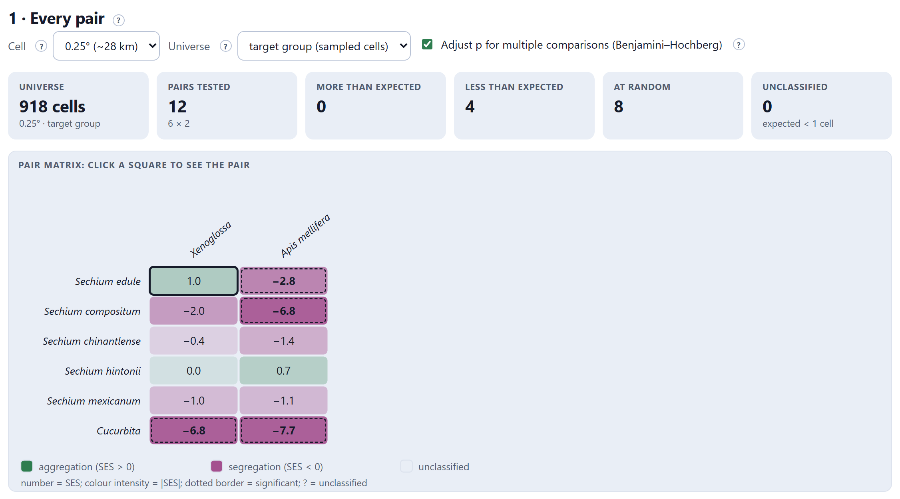
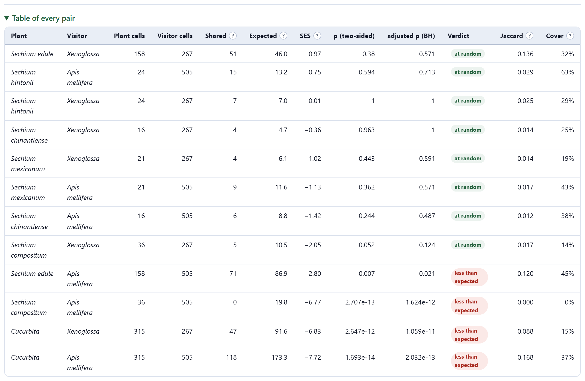
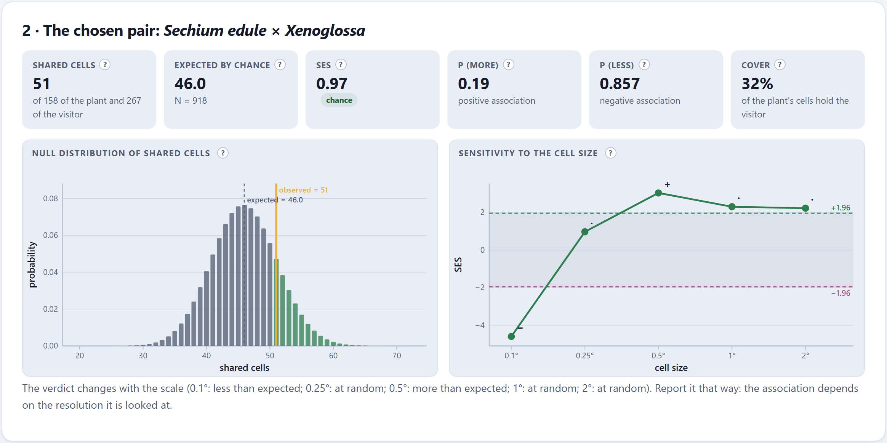
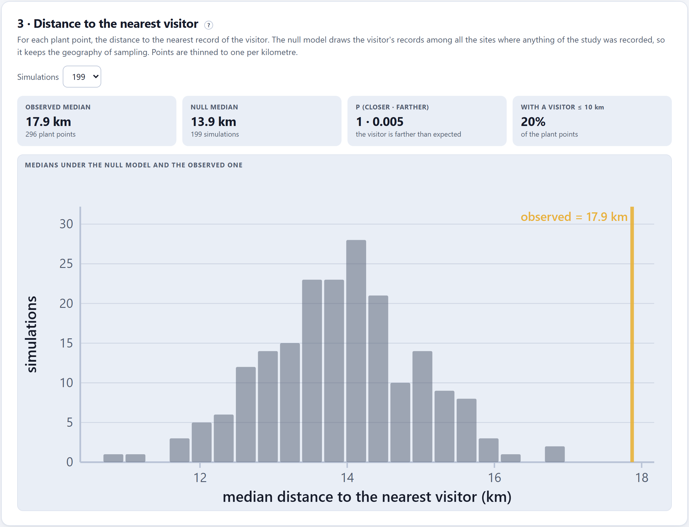
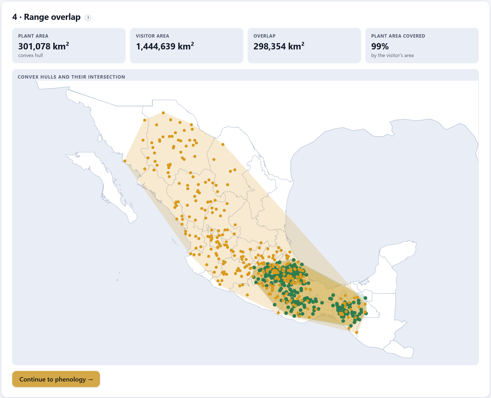

Do the plant and the visitor coincide in the territory more than chance predicts, once where sampling happened is discounted? Three independent readings: the cells they share, with Veech’s exact test and its sensitivity to scale; the distance from each plant to the nearest visitor, against a null model that keeps the geography of sampling; and the overlap of their ranges.
That the plant and the visitor have records in the same places says nothing unless you know how many co-occurrences would be expected by chance. The test of this block compares the observed with the expected, and the answer depends on two decisions: among which sites chance is spread (the universe) and at what scale you look (the cell size).
The territory is cut into cells. If the universe has N cells, the plant occupies N₁ and the visitor N₂, and they were placed at random with respect to each other, the number of shared cells j would follow the hypergeometric distribution. The app computes the probability of observing as many or more (positive association) and as many or fewer (negative association), with no simulations or normality assumptions (Veech 2013). The standardized effect size (SES) says how many standard deviations the observed lies from the expected; |SES| > 1.96 corresponds roughly to p < 0.05 (Gotelli 2000).
The default universe is the target group: the cells where any unit of the study was recorded, which are the ones that were really sampled (Phillips et al. 2009). The alternative, all the land in the extent, also spreads chance over cells nobody visited; the lab of Block 1 (Section 1.3) shows the error that produces.
The first card tests every plant against every visitor with three controls: the cell size (0.1°, 0.25°, 0.5°, 1° or 2°, that is, about 11, 28, 55, 110 or 220 km), the universe and the Benjamini–Hochberg adjustment for multiple comparisons.

| Tile | What it says |
|---|---|
| Universe | How many cells enter the chance model, with the size and type of universe. |
| Pairs tested | Plants × visitors. |
| More than expected · Less · At random | The verdicts, with adjusted p if the adjustment is on. |
| Unclassified | The pairs for which chance could never be rejected: those that expect less than one shared cell, or for which not even the most extreme result would reach α = 0.05. With so few data no conclusion is possible, and the app does not pretend otherwise. |
Clicking a square of the matrix chooses that pair for the following cards. The drop-down Table of every pair sorts them by SES, from aggregation to segregation:

Besides the test, each pair carries two descriptive indices: Jaccard’s (shared cells over the cells of either of the two) and the cover (what fraction of the plant’s cells has the visitor). ⤓ Pairs (.csv) downloads the complete table, with the Sørensen and Simpson indices and both tails of p.
With 6 plants and 2 visitors, 12 pairs are tested; with 30 pairs, at α = 0.05, one or two “significant” ones would be expected even if there were no association at all. The Benjamini and Hochberg (1995) adjustment controls the expected proportion of false positives among the pairs declared associated. Use the adjusted p to decide and report both; if you are only interested in one pair chosen beforehand by the hypothesis, its unadjusted p is the one that applies.

| Tile | What it says | Chayote × Xenoglossa |
|---|---|---|
| Shared cells | The observed ones, out of those of the plant and those of the visitor. | 51 of 158 and 267 |
| Expected by chance | N₁·N₂/N, with the size of the universe. | 46.0 · N = 918 |
| SES | The standardized effect size, with its scale label. | 0.97 · chance |
| p (more) · p (less) | The probability of as many or more shared cells (test of positive association) and of as many or fewer (negative). | 0.19 · 0.857 |
| Cover | What fraction of the plant’s cells has the visitor. | 32% |
The sensitivity figure repeats the test with the five cell sizes. In the practice study the verdict changes: less than expected at 0.1°, at random at 0.25°, more than expected at 0.5°, at random at 1° and 2°. The app writes it below and advises: “Report it that way: the association depends on the resolution it is looked at.” When all five agree, it says the result is robust to the scale.
| If the question is whether the visitor can reach the flower | then use small cells (0.1–0.25°): a solitary bee forages hundreds of meters or a few kilometers from its nest; a bumble bee, several kilometers. |
| If the question is whether they share a region (biogeography, history) | then 0.5–1° cells. |
| If the verdict changes with the cell | then do not pick the one that suits you: report the sensitivity figure and say at what scale there is association and at which there is not. |
With very fine cells and few records almost nothing coincides and the pairs are left unclassified; with huge cells almost everything coincides. Neither extreme is informative.
The third card uses no grid. For each point of the plant it measures the distance to the nearest record of the visitor and takes the median. The null model replaces the visitor’s records with as many sites drawn without replacement from all the records of the study —the target group—, which keeps the geography of sampling and breaks only the link between the two taxa; it is repeated 99 to 999 times (Davison and Hinkley 1997). Beforehand, the points are thinned to one per kilometer so that a heavily recorded site does not weigh a hundredfold.

| Tile | What it says |
|---|---|
| Observed median | The typical distance from a plant point to the nearest visitor, with how many plant points enter. |
| Null median | The median of the simulated medians. |
| p (closer · farther) | The fraction of simulations with a median equal or smaller (the visitor is closer than expected) and equal or larger (farther). With 199 simulations, the smallest possible p is 0.005. |
| With a visitor ≤ 10 km | What fraction of the plant points has a record of the visitor within 10 km: a figure easy to communicate. |
At 0.25°, the cell test says “at random” for chayote and Xenoglossa; the distance test says “farther than expected”. They measure different things: the first counts whether they share 28 km cells; the second, how close each chayote is to the nearest visitor. In the practice data, Xenoglossa spreads over the center and the north, where there are many records of other units, and chayote is concentrated in the center and the southeast: within the cells they share, the points are not particularly close together. Report both and say what each one measures.
The fourth card draws the convex hull of each unit —the smallest polygon without indentations that encloses all its points (Andrew 1979)— and computes its area on the sphere (Chamberlain and Duquette 2007), that of their intersection (Sutherland and Hodgman 1974) and what fraction of the plant’s area is covered by the visitor’s.

It is the coarsest reading of the three: a convex hull includes everything lying between the extreme points —in Figure 5.5, a good part of the Gulf of Mexico—, so it exaggerates the area of species with scattered records. It serves to say whether the visitor covers, at least in extent, the area of the plant; not to say whether they coincide within it.
| Test | Question | In the practice study (chayote × Xenoglossa) |
|---|---|---|
| Cells (Veech) | Do they share more cells than by chance? | At random at 0.25°; it depends on the scale. |
| Nearest neighbor | Is the visitor closer to the plant than by chance? | Farther than expected. |
| Hulls | Does the visitor cover the area of the plant? | Yes, 99%. |
“Xenoglossa occupies practically the whole area of chayote (99% of its convex hull), but its records do not coincide with those of the plant more than expected by chance within the sampled cells (0.25°: 51 shared cells against 46.0 expected, SES = 0.97), and the result depends on the scale. The distance from each plant record to the nearest visitor record was larger than under a target-group null model (median 17.9 versus 13.9 km; p = 0.005). Xenoglossa is therefore a potential pollinator whose spatial co-occurrence with chayote must be confirmed with visitation observations.”
Remember that these numbers come from the practice data: they serve to learn how to write it up, not to conclude anything about chayote.
Even with the three tests in favor, what the block demonstrates is opportunity for interaction. The sentence a reviewer will strike out is “X is a pollinator of Y because their distributions overlap”; the correct one, “X and Y overlap in space, which makes X a potential pollinator to be confirmed with observations of visits and pollen loads” (Blanchet et al. 2020; Dormann et al. 2018).
| Message | What it means and what to do |
|---|---|
| Plants and visitors are needed | The list needs at least one plant and one visitor with cleaned records. |
| The grid is too fine for the "all land" universe in this extent | With 0.1° cells over a large area, the all-land universe has too many cells. Use larger cells or the target group. |
| The verdict changes with the scale… | It is not an error: it is a result. Report it with the sensitivity figure. |
| Many “unclassified” pairs | There are few records for the chosen cell. Use larger cells or bring species together in their genus (Block 3). |